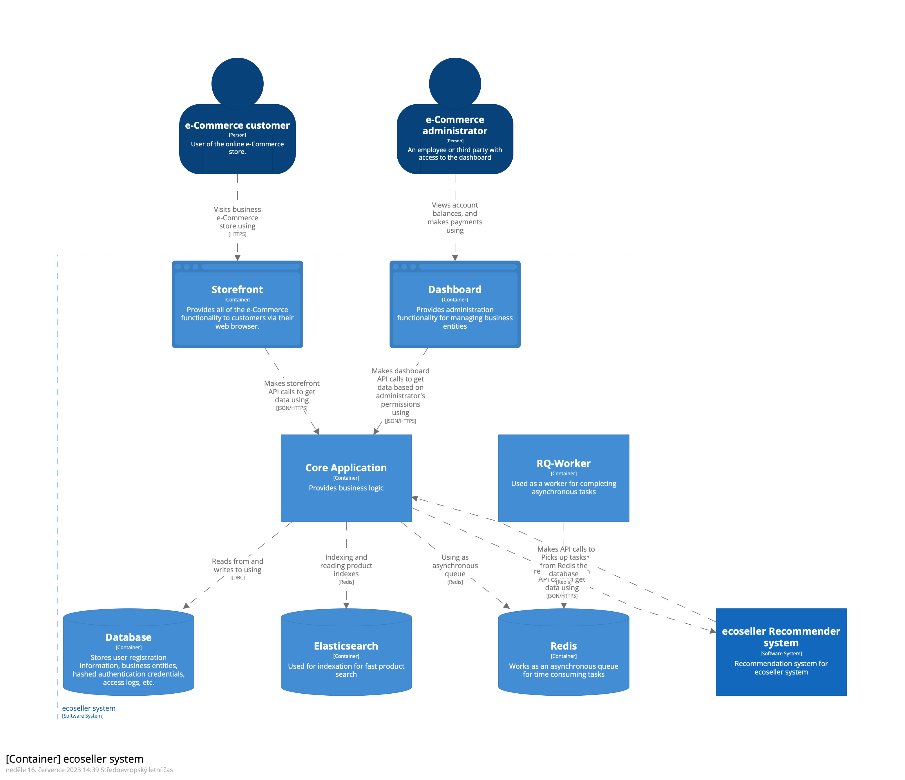

Table of contents:
The technical design of the ecoseller system combines a robust backend written in Django, a PostgreSQL database for efficient data storage, and user-facing interfaces built with Next.js for the storefront and dashboard. Elasticsearch enhances product search capabilities, while Redis enables asynchronous task processing via RQ-Worker. Additionally, the Flask-based recommender system provides personalized product recommendations. This integrated architecture ensures a performant, and programmer-friendly e-commerce platform written in Python and TypeScript.
Architecture & Design
 The Ecoseller system is built upon an architecture incorporating various services and technologies to deliver a powerful e-commerce platform. This section provides an overview of the technical design of the ecoseller system, highlighting the key components and their interactions.
Backend written in Django:
The core of the ecoseller system is the backend, developed using the Django Rest Framework. Django provides a solid foundation for building web applications and offers a range of features such as user management, data modeling, and API development. The backend handles crucial functionalities like product management, order processing, user authentication, and more. We can divide the backend part into several subsections based on the area it handles.
Core Application
Core part of the application will be implemented in Python using the following technologies:
Django Rest Framework– open source Python web frameworkRedis– open source data store that will help us with back-end task queuingElasticsearch– search engine for storing and searching product data More technical details about the Core application can be found in the backend documentation.PostgreSQL Database:
ecoseller utilizes a PostgreSQL database to store and manage data efficiently. PostgreSQL is a reliable and feature-rich open-source database that ensures data integrity, scalability, and performance for the platform. It handles critical data related to products, orders, user information, and various other entities within the system. The only system accessing this database is the backend described above.
Storefront and Dashboard written in Next.js:
The ecoseller platform includes two user-facing interfaces: the storefront and the dashboard. Both are developed using Next.js, a powerful React framework. Next.js enables the creation of dynamic, high-performance web applications with server-side rendering and optimized client-side navigation. The storefront serves as the online storefront for customers, while the dashboard provides a comprehensive administration panel for managing the e-commerce platform. Both applications are written in
TypeScriptand technical details can be found in the storefront & dashboard documentation.Elasticsearch for Fast Product Search:
ecoseller integrates Elasticsearch, a powerful search and analytics engine, to enhance the speed and accuracy of product searches. Elasticsearch enables efficient indexing, querying, and filtering of product data, ensuring a seamless and responsive search experience for users. The integration with Django allows for easy synchronization of product data between the backend and Elasticsearch. We use custom settings of Elasticsearch to improve the search experience. More on that in the section dedicated to supportive services.
Redis for Asynchronous Tasks via RQ-Worker:
ecoseller utilizes Redis, an in-memory data structure store, to support asynchronous task processing. The RQ (Redis Queue) library leverages Redis to manage and distribute tasks across workers. The RQ-Worker, an instance of the Ecoseller backend, processes tasks from the Redis queue, enabling efficient handling of background processes and time-consuming operations. More on that in the section dedicated to supportive services.
Recommender System written in Flask:
ecoseller incorporates a recommender system to provide personalized product recommendations to users. The recommender system is developed using Flask, a lightweight Python web framework. It leverages user behavior and preferences to generate relevant recommendations, enhancing the user experience and driving engagement. The recommender system is implemented in Python, the following technologies are used as well:
Flask– open source Python web frameworkNumPy– open source Python library used to work with vectors and matricesTensorFlow– open source Python library used for machine learning
The technical design of the ecoseller system seamlessly integrates these components, ensuring efficient data management, reliable operations, and a delightful user experience. By combining the power of Django, PostgreSQL, Next.js, Elasticsearch, Redis, and Flask, Ecoseller delivers a feature-rich and scalable e-commerce platform for businesses of all sizes with modern technologies.
Version control
As a version control system, current state-of the art git is used. More specifically GitHub.
Coding style
We use several tools for enforcing our code style. In both the dashboard and the storefront, we use:
Prettier– an opinionated code formatter with support for many languages, includingJavaScriptandTypeScriptESLint– a static analysis tool identifying problematic patterns found inJavaScriptandTypeScriptcode
Similarly, in Core component (which is written in Python) we use black code formatter and flake8 linter.
This way, we ensure consistent formatting of our code and avoid common bugs, which can be found by static analysis tools. We further use these tools in our Continuous integration setup, as described in Contribution - Continuous integration section.